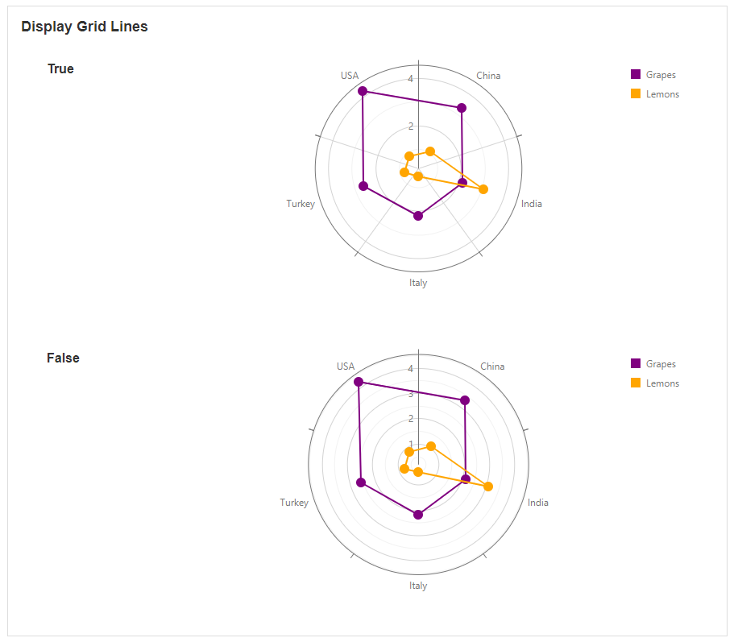
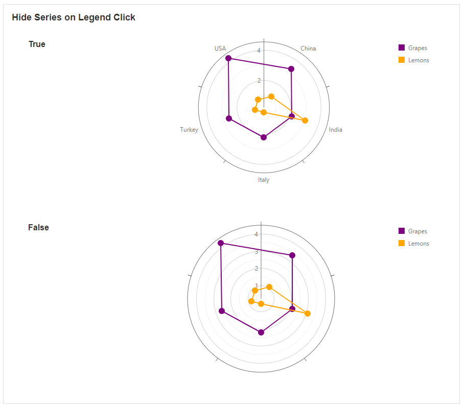

Polar Chart
This Block allows you to display data in the format of a Polar Chart. This is a useful way to visualize multivariate data and to plot one or more groups of values over common variables. For example, each series can represent a particular observation or group of data points, and these can be compared to other data sets in the same graph.
Polar Chart Properties
Appearance
Common Properties
Options for the appearance include its visibility.
See the Common Properties article for more details on common appearance properties.
Polar Charts also include the spider web, start angle, tick interval, argument line color, display grid lines, grid-line color, display labels, and tick position options. The series and alignment of the chart can also be configured.
Spider Web
This determines the shape of the Polar Chart.
Start Angle
This specifies the starting point of the line in the middle of the Polar Chart.
Tick Interval
This determines how many grid lines appear between each value if the outer argument is a number. A tick interval of 0 is the default value.

Argument Line Color
This changes the line color of the argument or outer field.

Display Grid Lines
This toggles the visibility of the grid lines in the middle of the graph which separates each value.

Grid Line Color
This changes the color of the lines in the middle of the graph which separate each value.
Display Labels
This determines if the labels are visible or not.

Tick Positions
This determines if the ticks on the argument line are aligned with the labels.

Hide Series on Legend Click
This allows you to toggle the visibility of each of the series when it is clicked on in the legend.

Alignment
This specifies the alignment of the legend. Options include top-left, top-center, top-right, bottom-left, bottom-center, or bottom-right.

Data Source
Common Properties
Properties that are common to most Blocks include: filter, sort, show # of results, and skip # of results;
See the Common Properties article for more details on common Data Source properties.
The Data Source property is required for the Polar Chart.
Data
Series
This determines what fields or data displays on the Polar Chart. The fields can be selected from a connected Data Source.
Last modified: May 25, 2025